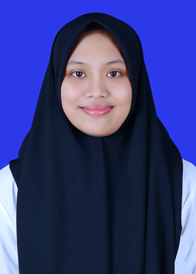

HOME
 Diaz Putri merupakan mahasiswi dari prodi D4 Teknik Informatika Politeknik Negeri Bandung yang memiliki ketertarikan dalam bidang ilmu teknologi dan desain digital. Memiliki pola pikir kreatif serta analitis dalam menyelesaikan masalah, serta mampu beradaptasi dengan perkembangan teknologi yang pesat. Berorientasi pada detail dan selalu antusias dalam mempelajari hal baru, terutama dalam pengembangan perangkat lunak dan desain antarmuka pengguna (UI/UX).